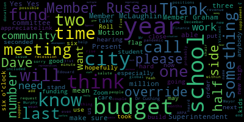

[Lungo-Koehn]: budget hearings, which were five of them. It took place on May 9th, 10th, 16th, 25th, and June 6th in the formulation of the district's proposal of a budget request. Signed, Dr. Maurice-Edouard-Vincent. If we could please call the roll.
[mo_l7RopgYo_SPEAKER_19]: Thank you. Member Graham?
[yrx76KKBXT8_SPEAKER_13]: Here.
[mo_l7RopgYo_SPEAKER_19]: Member Hays?
[yrx76KKBXT8_SPEAKER_13]: Here. Here.
[mo_l7RopgYo_SPEAKER_19]: Member McLaughlin?
[yrx76KKBXT8_SPEAKER_13]: Here.
[mo_l7RopgYo_SPEAKER_19]: Member Mastone?
[yrx76KKBXT8_SPEAKER_13]: Here.
[mo_l7RopgYo_SPEAKER_19]: Member Ruseau here. Mayor Lungo-Koehn?
[Lungo-Koehn]: Present. Seven present, zero absent. If we all could rise to salute the flag.
[63m6ohF-DtU_SPEAKER_07]: I pledge allegiance to the flag of the United States of America and to the republic for which it stands, one nation under God, indivisible, with liberty and justice for all.
[Lungo-Koehn]: I'll turn it over to Superintendent Edouard-Vincent and Mr. Dave Murphy, Superintendent of Finance. Assistant Superintendent of Finance.
[Edouard-Vincent]: Good evening, everyone. I am very excited to be at this formal public hearing for our budget. So this evening, Mr. Murphy is going to take us through a slide deck. You each should have received it this evening, describing where we are right now. So thank you, Mr. Murphy.
[Gordon]: Thank you, superintendent, mayor, members of the school committee. It's a pleasure to be with you again to discuss our FY23 budget. This evening is our formal and statutorily obligatory public hearing. And so depending on the level of public participation, I will keep my opening comments as brief as possible, understanding that on your agenda for your business meeting later this evening, there is another and potentially final FY23 preparation update. And so What I what I'd like to do if it works for the mayor for the committee is to talk a little bit about our process that has gotten us to this point. And then I will pause and if there are public members of the public who would like to comment I would I would encourage the committee to allow that at that time. And then we can either go into greater detail now as part of the hearing, or we can save that for later in your meeting. Either way, with it being an agenda item, I'll be happy to take questions at that time, and I would probably recommend that your formal vote. to take place when it comes up in your agenda, but so as to not make some of the community members who may be participating remotely wait too long, I would suggest that we talk a little bit about process and then move on to the comments. So Mayor, if that works for you, I'm gonna move forward with that understanding. So again this is a slide that the committee is what point of order member.
[yrx76KKBXT8_SPEAKER_13]: But often sorry we missed the good of the order again with good of the order will be on 6 PM agenda. I see it.
[Gordon]: No problem. So this slide is one that I've shared with you many times before, and it outlines the sequence that we as an administration and you as a school committee walk through throughout the late winter and throughout the spring, leading into the summer months, as we prepare for a new fiscal year. And it begins with the establishment of the district's strategic plan and identification of goals that we believe will advance that plan. You know, there was a surveying process in which we took the committee and the members of the administration's feedback to bring the sort of specific priorities and initiatives that we felt would be important in FY23. That was followed by our five budget meetings that took place beginning in early May and concluding last week in which We discussed the various components of the budget, the rationale behind the budgetary priorities, so on and so forth. On May 25, the school committee took a vote to request a budgetary package of the municipal government that was estimated at that time. to be 72.5 million dollars estimated 72.5 billion dollars I mentioned at the time that that that all of these numbers were being continuously vetted and scrubbed and so there was possible that they'd be some fluctuation but that was an important milestone in the budget process because it gives the committee the opportunity to. articulate clearly to the community and to the municipal government what, based on the information that we as an administration have provided, you believe to be the key priorities and budgetary goals for the upcoming fiscal year. From that point in time, the mayor has a responsibility to submit to the Medford City Council, as all mayors do under this particular form of municipal government in the Commonwealth, a number that is a recommended appropriation for the school department, And at that time, you've heard me say many times that the administration has to prepare for all different contingencies. It's our responsibility to go about a reconciliation process to identify how we're going to continue to advance those goals if in fact the ultimate recommended appropriation is less than the vote that was the number that was requested by the school committee. That number, there was a significant discrepancy between those two numbers as we discussed on June 6th. That there was a discrepancy was not a surprise. It was, as myself and the mayor discussed last week, a greater discrepancy than we were anticipating and certainly significantly greater than the discrepancy that we needed to reconcile going into the fiscal year 2022. So at this point in time, we have what we believe to be, what is our anticipated appropriation and the number that the Medford City Council will be considering it over the course of the coming weeks. And then that appropriation that is made to the school department ultimately is what the school committee has asked to adopt so that the administration can then go about our responsibility with respect to implementation. So the number that we're expecting is we're commonly using, just hold off on that one slide for a second if you could, thank you. The number that we are now anticipating right now is, it's about five or $6,000 short of $69 million. So I thank you for your indulgence in allowing us just to refer to it as the $69 million number. I think that'll probably save us some time. So you know the budgetary priorities that are included in that $69 million. I will talk a little bit about the work that we did to reconcile those numbers in a second and sort of the strategies that we used, particularly for the community's benefit. But in this next slide, I just wanted to make a couple of comments that I think are sort of unavoidable when we talk about this budgeting process. And my hope is that to provide uh, a certain level of clarity with respect to the context in which we're having this conversation. Um, it is not uncommon in school budgeting processes for folks to make the comment that regardless of whether we're vetting, whatever our priorities are, that we just have to wait for the mayor to give quote the number and then we can move on and implement the budget. And the problem with that approach, which is not uncommon, incidentally, and I have a, my sense is historically not particularly uncommon in Medford, is that it positions the school department, excuse me, the school committee to wear one of two hats. You can rubber stamp the number and go on your way to summer vacation. or you can dig into the number and micromanage every single line item within that number that's established by the municipal government. And neither of those two practices are particularly helpful. They're particularly constructive and they deprive the community of the opportunity to have a thorough, thoughtful discussion about the priorities and the goals of the school department. And so the process that has played out over the course of the past six or seven weeks has been an opportunity the school administration to articulate clearly what are the goals that we're trying to advance and what are the resources that we think we need to advance those goals. And at the same time the reason that you've heard me say over and over and over again that the school administration has a responsibility to plan for all contingencies is because regardless of what the city's capacity is or frankly what the municipal government's priorities are, our responsibility is to continue to move the Medford public schools forward as an organization. And so I thank the committee, and I mean this sincerely, for the opportunity to have this thorough and thoughtful and I think transparent conversation. And at the same time, the fact that there's a discrepancy, while it is more significant than I am comfortable with, and we'll talk about that in bullet number two, and that frankly, any of us are comfortable with, this is a budget that we are going to make work, that we are going to operationalize, and we are going to continue to serve the interests of students. I think it's fair to it's okay to say that both of those two things are true. With regard to the second bullet point. It is also not uncommon in communities that are on such a tight budget as we are about to be to for purposes of planning and because the in the Commonwealth of Massachusetts, there is a June 15 deadline by which non professional teacher status teachers of which we typically employ somewhere between 100 and 130 of our some close to 500 teachers and just for full context, a non professional teacher status teacher would be and sort of common parlance referred to as someone without tenure. In Massachusetts, under the law, it's professional teacher status. And after three consecutive years working in a district, a teacher is afforded that professional teacher status with a significant number of statutory contractual rights. And so by June 15th, every school district has to either renew or non-renew their non-professional teacher status staff. And without any notification, those individuals are automatically renewed. And so the choice that every district has when we're in this type of budgetary predicament is do we free up the budgetary capacity that we know we'll need and buy us additional time to determine exactly how we're going to implement this sizable budget of close to $70 million. Or do we run the risk that we're going to figure out a way to do it? And the sort of easy way out, and I don't mean to, I'm not in any way casting, I'm not in any way mean to pass judgment on other districts or other decisions that have been made, but I think it's fair to say the easiest way from a budgetary perspective is to issue en masse non-renewals. Because then after June 15th, we can then sort the rest of the budget out. Most positions will be restored. Most individuals will be invited back. But we don't have we're not up against that deadline that happens to coincide I don't probably not coincidentally with when the budget cycle is turning over right. The problem with doing that is that these non professional teacher status teachers. Are by and large dedicated educators who are in the early part of their career. trying to lay the foundation of a potential lengthy, fruitful, and contributive career in the Medford Public Schools. And so a routine form letter from the central office informing them of their non-renewal on the eve of June 15th on a yearly basis, I think has a significant detriment to our culture and climate. And so despite the fact that we are at a razor's edge with respect to this year's budget, we're trying to avoid that. At the same time, Given how close this budget is, we have no choice but to issue a limited number of budget-related non-renewal notices. And those conversations on a verbal basis took place last week between administrators and the individuals affected. Again, it is a limited number. It is not en masse. There was some strategy and thoughtfulness behind how those determinations were made. And as the budget picture stabilizes, and we'll talk a little bit about what variables need to be adjusted for that to happen, it is our hope that most, if not all of those positions will be restored, and where appropriate, individuals will be rehired. I wanna just put those two structural pieces out there, and then we'll go to the last slide, and then I would encourage comments or questions. So again, your original budgetary request was for $72.5 million. The anticipated municipal appropriation is just under $69 million. That's about a $4 million delta. And the way in which we've bridged that gap are one, the elimination of some positions, as I just mentioned. The identification of potential savings and areas of the budget in FY22 that we had some unrealized expenses. I will say that the $69 million budget is by and large a level services budget. I know I just said that there were some positions that were eliminated, but the goal is for the same level of service to be provided. There are a few discrepancies that we need to, frankly, a little more time to strategize about how exactly we're going to do that. It does have a 2% budgeted cost of living increase for all employees. That's been a consistent refrain that you've heard throughout this budget process that our desire to maintain both competitiveness and sustainability. And then there are a number of places in which we have identified grant funding opportunities for external funds or revolving funds, where appropriate to absorb some of those expenses to bring us in right at that $69 million number. In a technical sense, a balanced budget. We have reconciled those discrepancies as necessary to get to the number that we need to in order to be able to operationalize our anticipated appropriation. The school administration has communicated to the city administration our hope that in the event there are additional funding sources identified that that that will be considered and this number will be supplemented. That's our hope, that's our request. But again, we understand that there are a variety of competing priorities and there's a limited capacity and we have a responsibility to move forward regardless of where that number is. Mayor, I think I would be inclined to stop here and see if there are questions that, if I could just review one thing very quickly. The next slide essentially is what I've already covered. So if we want to put that up on the screen for a minute, but then if there are questions or comments, this would seem as good a time as any to field those.
[yrx76KKBXT8_SPEAKER_13]: Member Ruseau. Thank you.
[mo_l7RopgYo_SPEAKER_19]: Since I'm just getting the slides, are we going to, at some point, are we going to discuss the size of the fiscal cliff we're facing next year? Or is that, you have too much to do right now to talk about that.
[Gordon]: For FY24? Yeah. Well, I think what I would say is the scope of the structural, I mean, there's different ways of estimating that or calculating that, right? The part of The uncertainty behind our f y 23 budget are the open collective bargaining agreements now you've heard me say that. We have budgeted for 2% cost of living increase if those agreements settle above 2% and there's other there are additional reconciliations have done and it part of the sort of strategizing behind the patient is identifying where we potentially realize capacity necessary to do that at the same time. The challenge that we have with respect to the scarcity of recurring funding and capacity, it's a recurring challenge. And so whatever we can potentially solve in FY23, I think partly to your point, we have to be anticipating what level of a challenge are we creating for ourselves in FY24, which is why the sustainability component of our bargaining strategy is as important as our competitiveness one. But I can't give you a sort of concrete number to say this is the number that we'll be facing in FY24. just like three weeks ago, I couldn't give you a concrete number as to what level of challenge we're facing in FY23, other than I can say that the themes are going to be the same. That there's a limitation as to the revenue the city can raise. There is a declining level of reliance that we can count on with respect to the one-time funding sources that were such a benefit to us in FY22. And there are fixed costs that will escalate To what extent they escalate frankly depends on, in large part, where those collective bargaining agreements, ultimately settle, which is why it's a major driver of our budget and while any one of us could articulate, I think, in great detail, the extent to which we would like to reward our employees for the tremendous work that they have done, particularly over the past couple of years, in helping guide students through this incredibly difficult chapter in the history of public education. As true as that might be, the other variables that constrain our ability to compensate people, as we might morally like to, are there. And we create more, I think, moral hazard by making agreements that we know we can't sustain. And as you've heard me say many times, and I know after six or seven of these meetings, it may sound repetitive, but when school districts establish or exacerbate structural deficits, it is inevitable that students with the greatest level of need will feel the brunt of it. There are positions that we cannot eliminate. And then there are some that we should not eliminate. And that is the conundrum that I think it is our responsibility, yours as the governing body, ours as the administration, that we don't walk ourselves into. So I don't have a number, but I did have a lengthy answer, and I hope that was helpful.
[mo_l7RopgYo_SPEAKER_19]: Looking at a different document, ESSER I is completely spent. ESSER II is completely spent.
[Gordon]: ESSER II is not completely spent.
[mo_l7RopgYo_SPEAKER_19]: OK.
[Gordon]: And the ESSER II expiration is not until
[mo_l7RopgYo_SPEAKER_19]: The first quarter of FY 24 right I was looking at the budget book that showed the extra grants in the back.
[Gordon]: Yep.
[mo_l7RopgYo_SPEAKER_19]: And Esther to was listed as completely spent for FY 22 and Esther three had like a couple hundred thousand left, which budget book is that when you sent the one from this year.
[Gordon]: Yeah, I have to go back and look at that but that that might be the. I think what that is is the total amount that we're anticipating spending, but we have $6.2 million over the course of the next two to three fiscal years that are at our disposal.
[mo_l7RopgYo_SPEAKER_19]: That does not include whatever you've just magically done to make this work, right? So that'll be a small number.
[Gordon]: Well, no, it does. I mean, it's $6.2 million going into this conversation. But to be clear, there's, and again, I want to be very clear, especially for those who are just joining this budget process, this is a very complicated step-by-step process, and I don't mean to talk too quickly over any specific details. And I would ask the committee or members of the community to try to if there are specific levels of detail that they would like to know, just ask. But with $6.2 million was the anticipated amount of remaining ESSER funds. What we anticipated we would have at our disposal as of the beginning of fiscal year 23. So last spring, we had said that we thought we would end up spending approximately, I think it was $1.8 or $1.9 million of ESSER money in FY22. We're going to come in below that in part because there were other external grants that came that were at our disposal during fiscal year 22, but only for fiscal year 22. And so those were prioritized over the use of the ESSER grants in FY 22, because they can roll forward into FY 23. So it's about $6.2 million going into this conversation. But as you know, under our category B priorities, which amounted to $600,000 of urgent post-pandemic-related initiatives. That is the amount that we were anticipating from the very beginning, assuming there was not operating budget capacity, would come out of that ESSER amount.
[Lungo-Koehn]: And if I can just add from the chair, Dave and I have worked, especially over the last six to nine months, to make sure that if something is ARPA qualified, that the city helps out on that end. I know we've helped with some ADA signage, McGlynn playground design, 300,000 in testing. We also put in water filtration systems handless into each of our schools for hundreds of thousand. And we covered that all in the city ARPA side so that we could make sure that ESSER remains as stable as possible.
[Gordon]: Thank you, Mayor. That is a good point. And it's part of why we enjoy the important partnership and continuous dialogue with the mayor's office because the mayor's exactly correct that while we want to be strategic and capitalize on the ESSER funding while it's available, given that we have something of a runway or shelf life to utilize it, where there are other funding sources we've relied on. So, and certainly the COVID testing platform that we established with Tufts University was a sizable amount of money, frankly, The grants did defray the sort of $2 million down to closer to $1 million as to what we spent in FY22, but we were anticipating hundreds of thousands of testing dollars that ultimately we were able to save on due to the city's ARPA capacity.
[yrx76KKBXT8_SPEAKER_13]: Thank you. Mayor? Member Graham?
[SPEAKER_05]: Is the city going to publish an accounting of how ARPA money has been spent and what is being attributed to schools? I've not seen that.
[Lungo-Koehn]: Yes, we will be.
[SPEAKER_05]: Okay. I think that would be important because I think it's great that we are capitalizing on our use of ARPA and ESSER and all the grant funding that goes away. I think that's great. And I don't think the community fully understands how the money is being spent. So I think that is critically important, but I guess I'm also, as I read the budget book, it looks like we're pretty darn close to exhausting ESSER at the end of FY23. So the Great Retrain is sort of effectively over and we won't have that to fall back on next year.
[Gordon]: Is that reasonably close? Why don't we fast forward, Dr. Bishop, to the slide FY ESSER funding priorities. So this slide details the buckets of funding that the district is anticipating we will use ESSER funding for. And I think it's pretty clear in terms of what those buckets are. I don't anticipate that they will be exhausted at the end of FY23. I think I don't anticipate that at all. However, there are some variables that are as yet undetermined. And so it's impossible at this stage to say exactly what our estimated S or usage would be. And I think that to miss Graham's point, I do think the community, um, could benefit, uh, from, uh, uh, articulation of those, uh, Essar funding priorities. Dr. Christian, we just do the Essar funding priorities slide. It should be, uh, that's okay. I think it's the next one. Yeah. So, um, you can see here that there are, there are, uh, four, Just let me finish my first point, then I'll get to my second. To Ms. Graham's question about articulating clearly for the community everything that the various funding sources and investments that the school district is benefiting from, I think that's necessary. One of the challenges is that as the federal guidance and regulations have shifted over the course of the last two years, there have been moments where things that we did not think were eligible for funding became eligible for funding. And so, trying to update that in real time, even for those of us in the finance office, has been a challenge. I'm not blaming the federal government and our benefactors in Washington. It's just that I recognize they've never done this either. But trying to keep track of exactly what sort of out of nowhere significant funding source we're using to cover which expenses can feel like a bit like a roller coaster at times. So I think we should do that. But it might be one of those things where people don't we there has to be sort of a delay in the messaging before we sort of identify exactly what account that came from. But so but thank you for that question. With regard to the FY23 funding priorities, it's essentially in four buckets. The first are unrealized, sort of what we're talking about tonight. There are pieces of the $4 million delta between the anticipated appropriations and the school committee's request that will be charged to us, some of them like the $600,000 that would position us to open a new newcomer strand for our English learner students, staff, increase our adjustment Councilor staff, as well as our nursing staff. Those are priorities that from the very beginning of the budgeting process, In anticipation of some degree of a delta, we knew that those would be appropriate based on their nexus between the need for these priorities and the pandemic. as well as from a numbers perspective, in the range of what we were looking to invest from our funding sources in FY23. There are others that are a continuation of some of the programming that we have, or initiatives we've instituted in FY22. And that's not to say that each of these would be identical to what we did in FY22, or even that the financial impact might be identical. But things like the Acceleration Academies or after school support, potentially SEL programming like Camp Mustang, our engagement team to increase our family and community engagement. programming as well as to some degree, and I certainly think this will be less, I hope it will be less in FY23 and even less still in FY24, but some degree of COVID mitigation and public health measures along the lines of ventilation and testing. In addition, there's professional learning, much of which was supported by ESSER funds in FY22, and some are things that, due to this particular shortfall, we would potentially move on onto the ESSER funding, understanding that we are trying to, we said last year, the goal was essentially 35%, 35%, 30% over the three years that we had access to this funding. We're gonna come in a little lower than 35%, maybe significantly lower than 35% in FY22. And so the hope would be to then have greater flexibility and capacity in FY23 and FY24. Final bucket, and again, these pieces here that are still uncertain in part because of ongoing negotiations, but until some of those variables are more, are sort of firmed up. It's hard to articulate in as much detail as we can sort of looking back on FY22 exactly how that funding will be utilized. But certainly from a thematic perspective, you can see that one, we're only going to use ESSER funding for things that are ESSER eligible, a point that I will just candidly say, I didn't think I would have to reiterate as many times as I have in recent weeks, but I'll continue to say it, that if a expenditure is not eligible for this funding, then we are not going to use the funding for that expenditure. That's not really an opinion. That's just, that's, that's something that we're going to have to do or not to, as the case may be. And then I think, again, as we get greater clarity, this is a piece that we'll be reporting back to the committee on over the course of the fiscal year.
[yrx76KKBXT8_SPEAKER_13]: Member McLaughlin.
[SPEAKER_06]: Can you elaborate on 3C? 3C. Would you go back to that slide, Mr. Dr. Fishman? Engagement team?
[Gordon]: Yeah.
[SPEAKER_06]: So professional support for high need.
[Gordon]: Sure. What I can tell you is that the rationale and the strategy that we've used since we first had access to this level of funding was that we recognize that for most vulnerable student populations, the effects of the pandemic and the disruptions to learning that took place and that to some extent continue to take place are disproportionate. And so by trying to look at the expenditure of ESSER through an equity lens, just as we do the expenditure of all funds, it's the case that if there are staffing positions that, supplemental staffing type positions that we need to invest in, in order to make sure that learning gaps that are either caused or exacerbated by the pandemic are narrowed, then that would be something that we would tend to look to the ESSER capacity to see if it's something that we can cover. So, honestly, you know, this is covered in the first bucket as it happens, but the establishment of an additional newcomer strand in staffing positions, that is an example of something that we are doing because we recognize that some of the class sizes in the immediate aftermath of the pandemic are unsustainable, even with additional staffing supports. And so while personnel positions are typically not something that we want to be reliant on grant funding for, in this case, the immediacy of the need and how pronounced the need is, require us to essentially suspend our principles with regard to one-time funding sources for staff and invest in those positions. Now, it's also true that It's our hope that some of that need will be diminished over time, and therefore it is more consistent with how we would like to use one-time funding. But that's essentially just what that means, that that's what would be prioritized over, say, additional positions to expand electives at the high school. It's a great thing to do. We want to expand electives at the high school, but expanding electives and having a diverse course catalog at the high school would be a goal with or without the pandemic, without those disruptions. And so that would be something that we'd be more typically, we would more typically be inclined to use operating funds for, as opposed to ESSER.
[yrx76KKBXT8_SPEAKER_13]: Thank you.
[63m6ohF-DtU_SPEAKER_07]: I just have a quick question. Yes, member Kreatz. Yes. Would you be able to just give some examples of the one-time funding sources, what that would be like, and the revolving funding sources, just in case the public doesn't know?
[Gordon]: Absolutely. No, thank you. Thank you. Mr. That's a good question. So And just for context purposes, the reason that this is important is that when we have a $4 million discrepancy between the request and the appropriation, there are things in the package that the school committee approved that we want to do, that there are positions that we want to have, there are offices that we want to keep intact, there are initiatives that we want to make sure that we are affording students the opportunity to engage in. If the operating budget capacity isn't there, but there is an appropriate funding source, and generally speaking, the propriety of a funding source would depend on how closely associated the revenue source is with whatever the initiative is that we're trying to do, or positions that we're trying to staff, then we would look to see what funding sources are available. So that could be any of our 13 or 14 revolving funds, I mean, an example would be, we have revolving funds that help support our career and technical education programming in our vocational section of the high school. And the revolving funds are revenue, generally speaking, generated by the tuitions that students are paying to come and attend our program. And so there are positions that we would greatly prefer to be on the operating budget. It is something that we will have to examine closely over the coming years in the hope of migrating those positions to the operating budget. But we don't want to cost students the opportunity to enroll in the Chapter 74 program of their choice. And so in that case, we would rely on, for instance, the CTE revolving fund in order to staff those positions. And there could be similar situations with the athletics or community schools revolving funds, with before and after school programming revolving funds, or with the food service revolving funds, where, and frankly, up until two years ago, I think there was more of a practice in the Medford public schools of relying on the revolving funds to fund certain positions. It is a practice that, our administration has tried to move away from for purposes of stability and just predictability. But in this case, I think it's more advantageous to be creative with how positions are funded than to try to reorganize to a disproportionate extent on a very short timeline. Um, but, and I, this is in here somewhere and I guess we'll get, we'll get to it. Um, one of the, one of the opportunities that I think we should look at FY 23 as, as representing, uh, maybe not an opportunity that some, you know, that we're all desperate to necessarily, uh, seize upon, but a, an opportunity is to look really closely at everything that we're funding through some of these one time funding sources and what we're funding on the operating side. and to try to be really strategic and thoughtful about what expenses belong where. It might well be the case that we have revolving funds that are very steady and that there's going to be a revenue source there, unless there's a pandemic or something, that we can rely on. In which case, it may be worth continuing that practice so as to not eat up operating funds. There's no benefit to having massive surpluses are revolving funds, and in some cases we're prohibited from having massive surpluses. But I think it's a very different scenario to examine these things over the course of the next year as opposed to examining them over a very short period of time to balance a budget. And I think that's one of the things that we can look forward to in FY23. I'm more than happy to take other questions of the great marriage is given that it's a public area. I want to pause for second see if there are folks either. You're online. That have questions.
[yrx76KKBXT8_SPEAKER_13]: Was the number from the chair was the number of asset funds used 1.2 million.
[Gordon]: I think it's going to be about 1.2 million. I honestly don't have an exact number right now but that's the last time we did a projection that we were just getting.
[Lungo-Koehn]: And then our temporary positions, I know, will end in two and a half years, December 31st, 2024. Is that the same with SRD now?
[Gordon]: When do the funds sunset? Or when do they have to be expended by?
[Lungo-Koehn]: Expended by six months after that, but you have to... can only have people in positions till December 31st, 2024.
[Gordon]: Yeah, unless they're migrated to operating positions. Correct. So there are two, technically, ESSER I expires September 1st or 30th, I'd have to, probably 30th to make more sense, of this year, ESSER I. September 30, 2022. September 30, yeah. I think they extended it, did you say 2021?
[mo_l7RopgYo_SPEAKER_19]: Sorry, I'm just looking at the memo we got a couple days ago. ESSER 1 obligation deadlines, September 30, 2022. 22, yeah, right, exactly. And 2023 for ESSER II and 2024 for ESSER III, same date, September 30th.
[Gordon]: Yeah, it's the first quarter of the fiscal year that it ends. So our ESSER I, which is essentially depleted anyway, is September 30th, 2022. And our ESSER II, again, it's $6.2 million, but the vast majority of the eligible expenses are the same. And so I honestly, I don't recall the distinction between ESSER II and ESSER III. The distinction between the two programs is more about reporting requirements than eligibility of expenses. And so ESSER II is the first quarter of fiscal year 24, calendar, so as Mr. Rousseau said, September 30th, 2023. And then the first quarter of fiscal year 2025 is the end of ESSER III. So we can basically rely on these fundings for the next two school years. This is the easiest way to explain it.
[yrx76KKBXT8_SPEAKER_13]: Thank you. Member Ruseau?
[mo_l7RopgYo_SPEAKER_19]: Thank you. I don't see any hands up on Zoom, so I'll just ask my quick question here. When we report, you were listing reasons to not have people on revolving accounts and stuff. You didn't include transparency, which I think is a very important part of it.
[Gordon]: I wasn't trying to hide it, though.
[mo_l7RopgYo_SPEAKER_19]: No, I know. But when we report to the state, the state lists some very fascinating data about what school districts are spending, which is, for the most part, absolute garbage. know, Somerville allegedly spends far less per student than us, but their buildings, their custodial, their food service workers, all of their entire IT infrastructure and staff and more utilities is all in the city side. So, you know, it makes it look like they have a pretty healthy budget. and then you divide it by the number of students, then it looks like things are really much worse over there. And that's just not fair and not accurate. My question, though, is when we put people off of the operating and put them onto revolving accounts and also grants, are they included in the numbers that we tell the state anymore? Are we telling them the budget?
[Gordon]: Yeah. That's a good question. I honestly want to check on that. We report in a few different ways. And so I think that the data you're referring to I'm assuming is from the dusty dashboard. Yeah, in which it says this district is paying this much on administration is paying this much on teachers. I think it's usually broken down into general education special education. And then there's a few other subcategories. And honestly, I would be surprised if the use of certainly revolving funds had an impact on our reporting. And I honestly, I think that's true for the external funds as well, because for instance, our Title I, our teachers who were focused on Title I reading, those are gonna be reported in our numbers as well. Essar has only been around for a couple of years, so I don't frankly know. I can't think of a reason why that would be distinguished but I can look into that and get back to you. Thank you, more details, because I agree I mean you want to you want the reporting to paint a complete picture. And to your point about Somerville, and this happens all the time on the personnel side, where districts will survey other districts about, well, how much does the person in this position earn? And the position, the title might be the same, but the portfolio is completely different. and therefore that in in there's a variety of other variables that you have to factor in and you really frankly need real familiarity with their work structure to understand the comparable and person is and I think the point that you make but that this sort of the division of the budget is is very so.
[yrx76KKBXT8_SPEAKER_13]: Member Graham.
[SPEAKER_05]: As we go into next year, can we have a quarterly accounting of ESSER funds spent and like planned, essentially, so understanding that it's, it is going to change, you know, over time and it should because we want to make sure we're maximizing use the money but it's It's not my sense that we're gonna be looking for ways to spend money at the end of the line here, given all that we're having to use it for in this next year.
[Gordon]: Yeah, no, I think that's right. And I think it will be, and we've tried to provide budget quarterly updates, but I think a focus on ESSER and frankly, all external funds next year will be important because the issue of how this sort of trajectory is going with respect to the city's capacity versus the school's needs, is that, as I said, there are going to have to be decisions made with regard to what do we migrate, what do we cease funding, and what are needs that we don't realize we have now that we'll need in the future. And I think the only way to do that will be with greater scrutiny. So yes, I think my short answer to that is yes, I think we should do that. Just about the process again, Part of why I think the exercise that we've engaged in is important is that it is a good way of helping to convey to the community at large, not just what the immediate needs are now with respect to what's going to prevent the district from imploding, but what is going to ultimately be the investments that move the district forward. And last year, as you recall, the Delta was smaller. But the priorities that we listed that we didn't fund in FY22, the ones that come to mind most easily, were the math coaches. And we said it's not that we don't need math coaches, we need math coaches. We just think that based on the totality of the needs, that we'll be more ripe for math coaches, we'll be more ripe for consideration in the succeeding fiscal year. This year, as you probably remember, they were category A and they were the first bullet point because we know that we've made the investment that we need to in the math curriculum And so now we need to make sure that we have the associated staffing to to make the most of that investment. So what will it be next year? I don't know, frankly, it might be that we decide that the adjustment Councilors that we think are an emergency need right now, and therefore we're gonna resort to the ESSER funding, we're gonna determine that we're seeing SEL advancement and a stronger school culture and other more micro points of data that will tell us that this is something that before we do anything else with the operating budget, we need to absorb this into the operating budget to make sure that that's a stabilized position. I don't know. I don't know if that's the case. I mean, frankly, I hope, I don't know what the FY 24 priorities will be, but my hope is that we're able to construct a continuous narrative that can help the community to understand exactly how the organization functions and how it can function better.
[SPEAKER_05]: And I do want to say that the feedback that I've heard from the community is that they appreciate that. We are having this discussion in a proactive manner on the school committee that we've moved away from past practice, which was dysfunctional and didn't give the community an understanding of what the district felt like it authentically needed. So I think that the feedback on that has been good. I think the negative feedback has been about the surprise of how big of a gap we are trying to fill in the month of June. to get to a budget that you all can operate against on July 1st. So that has been exceedingly surprising to everybody, including I think most of the people in this room. And I am really concerned that we cannot do that again next year. Like we're, we're sort of out of options to move stuff around at the very last minute without impacting kids. And we can't do this again. And I don't think the community
[yrx76KKBXT8_SPEAKER_13]: we'll stand for it again. Member Ruseau? We do have a name, a name, a hand up. Dave McKenna? Okay, sorry, just took a minute to unmute.
[SPEAKER_00]: So I guess my comment is for the mayor given that we are facing long-term challenges just in maintaining the current funding of our schools with expiring one-time funds. I would like to ask you to begin the prop two and a half override process so that we can not balance the budget on the backs of our teachers with a 2% raise. I think that's for all that they've done for us in the past couple of years. I think that's an insult to say that balancing our budget requires giving such a terrible raise. And we can't even afford to do that in a couple of years unless we increase our operating budget. So again, I think it's pretty clear that we need to do a prop two and a half override. And I ask you to begin that process.
[Lungo-Koehn]: Thank you, Dave. One issue we would face if we didn't override, of course, I would never have even thought to do it during the global pandemic, especially 2020-2021 when we were facing budget issues at that point. And now we have people struggling, we have inflation, we have a recession coming. To do that now would also be, if we ever did that, it would be included in our revenue number. And if we did in the past, same thing would almost be included as if it was the large donation that we took in. So revenues would be affected and allow us to use less of our opera funding to help supplement the budget. I think it's the school committee's goal to hopefully fund a new high school. And that's going to take something as far as a debt exclusion or a proposition two and a half override, even if we get half the funding from the MSBA. So for a community to fund at such difficult times, something like that in a couple of years and an override is probably just to take care of the budget. is probably not something I think the community would support, and it would be hard-pressed to put it forward during a global pandemic or in a recession.
[yrx76KKBXT8_SPEAKER_13]: Mayor. Member Ruseau.
[mo_l7RopgYo_SPEAKER_19]: Thank you. I fully respect what you just said, and I definitely agree that certainly plenty of people are hurting. I will say Medford is one of four communities that has never done a debt exclusion or an override, and so My only real response to that is, I know you're from Medford and I'm not, but I don't think any of us know what the residents of Medford would say to an override. That's called democracy by letting them vote. It's not democracy by not letting them vote and choose. If the voters say no, the voters have said no. but we don't know what the voters would say. And so, you know, everybody gets a vote except nobody gets a vote because we won't let them choose. So I certainly understand that people are hurting and this is not, you know, I mean, are we entering a recession soon? Things don't look good, but how we respond to this fiscal situation matters. I mean, if the next budget is, all right, we've got to find 20, 50 teachers or staff to get rid of. As we've already discussed, it's definitely not going to be the principal teaching staff. It's going to be the paras, the nurses, the adjustment Councilors, all of the people that are helping kids that are in crisis. The regular teachers, of course, are doing that too, but they're not getting laid off because somebody has to stand in front of the classroom. And then a year after that, if it's really a recession, it's not going to be six months. What are we going to then get rid of electives and throw kids into gigantic rooms to quote study halls or whatever they're called nowadays? I mean, this situation, if the residents want to remedy it, we should let them remedy it. but we aren't letting them, and by we, I mean you and then perhaps the city council, I have to admit, I'm a little confused on the process still, aren't letting them decide. And to me, that doesn't feel like respecting the residents.
[Lungo-Koehn]: Yeah, I mean, I'm not letting the voters decide. The first I've heard was last week that I should have done an override to supplement the budget. All other talks or requests for me over the last two years have been, we need a new high school. We need to prepare for that. We need to create a campaign to get community support, to hopefully be able to fund a new high school. And I've also heard, you know, our roads, that is definitely something that will be explored, but to fund a budget, I think we need to live within our means. I think we need to wean off of one-time funds, which we always knew we had to do. Last fiscal year, we could use 12.3 million. This year, we're sticking to our number, but for that donation, which will be about $7.6 million from free cash, which we thankfully budgeted well, and we're able to build that up to cover us this year and hopefully next year. And at the same time, we have an economic development director who is actively working with my office to bring in new development from life science to mixed use to housing we are negotiating 340 bees. I'm negotiating three community host agreements with marijuana companies, we are doing everything we can to be able to sustain this city budget. When it comes time, those buildings yes they won't be built for two three years, but we're doing the work to build that commercial tax base, because it was going down two years ago and all we want to do is build that up. I can go on, but that's where I stand, and anybody can take the initiative to ask the public for multiple overrides for multiple things, but we have to be realistic at the same time. Member Ruseau.
[mo_l7RopgYo_SPEAKER_19]: Not a rebuttal. I would just say, though, that Medford, as far as I can tell, has the lowest public school enrollment in the entire state at 72%. And when people are deciding whether they want to send their kids to our schools, listening to the conversation we just had would definitely be a big decider for me to say, maybe not. You know, we are definitely not committing to making them better if we're just going to be like, we've got to live within our means. You know, people are buying million dollar plus homes and getting here and getting the same level of service they get from the little podunk town in New Hampshire where I grew up. I mean, that's what they get for their million dollar plus homes. They get a tax rate, not a tax rate, a tax bill that shocks many of them, shocks them. Is this right? How can this be all I have to pay in taxes? And while I understand plenty of people get their tax bill and have a very different response because they didn't buy a million dollar house, they bought a house in Medford 30, 40, 50 years ago and the tax bill is hard to swallow. But I think we're gonna have this sort of clash where we have residents moving in here paying top dollar for homes that, I mean, every single day on Facebook, it's another post for a home for sale. And you look at it and it's frequently like, know, a two or three bedroom capable one bathroom. And it's cost two plus times as much as my condo from 15 years ago. But they're moving here, paying $1 million for that, and then getting services that frankly, you can go to other Facebook groups, since we don't have media anymore, you can go to other Facebook groups and see, like, wait, when's this? When's this service? When's that service? The answer is, it doesn't exist, or you can't have it. So I You know, this really low percentage of public school enrollment has been an issue for me for years now, once I was able to finally find it on the state's website. And I understand we had a lot of people going to Catholic schools and that had nothing to do with the quality of our schools. But as other communities also had lots of kids going to Catholic schools, and they're not now. 72% is frankly embarrassing. It says something. Because when I door knocked my first campaign, I was on a street right outside of high street. And I can't remember the woman I spoke to, but she said, Oh no, all the people on the street, like we've been here for generations. We would never have sent our kids to the public schools. We moved here because the taxes were really low. We could get a big, beautiful house. And with that, we could send our kids to private school. That's not the community I want to live in. I want to live in a community where the public schools are something we joyfully send our kids to and want our neighbors to also feel like that's the place to go. So it was not meant as a rebuttal in any way, shape or form, but this lack of confidence by the public in our schools, which, you know, every time we meet where we say really great things are happening and they are, but an awful lot of people aren't hearing the message and they certainly have a message that they're passing down to their friends and their kids. And we're not doing anything to rebut that at all. Thank you.
[SPEAKER_06]: Yeah. Member McLaughlin. Thank you. I actually just wanted to say, you know, I think that this is a complicated issue and not one to discuss on the floor at the last meeting of our year. And I also wanted to say, I do think that there are lots of great things happening in Medford public schools, And that if there are folks watching or listening, I hope that they won't be dissuaded to send their kids here because I think there's lots of great schools. I have three kids. We had the option of sending them to private school. We did not. We wanted Medford public schools. We specifically chose Medford high school for the wonderful diversity it offers. There are over 300 countries represented in our high school. You can't buy that kind of diversity anywhere. So I want to say I think that there's a lot of good things happening in our schools. We are here to make our schools better and we all think that the mayor and everyone else included is here for that and so I just want to make sure that we're all on the same page that we are making our schools better but they also are very good schools. Thank you.
[Lungo-Koehn]: Yeah, just to piggyback on that I mean to give you all credit of the school committee works hard. for for the children of this community and all the staff and you know you asked the city administration for five and a half million dollars over last year's budget for this current year's budget and that's something that I have to obviously weigh and work with CFO on but but I appreciate that and I think the residents should know that city side is as close to level funded this year as possible because of the situation we're in. But we were able because I wanted to make sure that we gave as much as we could to the schools, which is close to a two and a half percent increase. And when we did have the money last year, the city side stayed within the means that we could so we could give the schools a 9% increase when the money's there. We want to do it. So anybody that says the city doesn't care about our kids or that I don't care about the kids is 100% that is 100% false. I too have three kids in schools. I think the schools are fabulous. I think the school committee works really hard to push me for as much as you can. You can get, I appreciate that. And if you do it respectfully, I really appreciate it. But we're in this situation. We know where we're at. We know we have to wean off of one-time funding. We have plans to do that. We're gonna start budgeting and taking the necessary steps starting July 1 especially on the city side. I know Dave and superintendent will be doing it on the school side, figuring out how, how we can get through the next couple of years that are going to be tough, but I think, I think we can do it and we can work together and do it in the best way for our students and staff. Mr. Murphy, is there anything else to add?
[Gordon]: No, just get that. It's a public hearing. If there are any other questions or comments, I'd love to take them.
[yrx76KKBXT8_SPEAKER_13]: Any other questions from the committee?
[Gordon]: So if that's the case, what I would recommend is a vote to close the public hearing. And then, as I said later this evening, I'll give you what I would anticipate being your final budget update, at least at this phase of the budget process. I'd ask for a vote at that time. And then subsequent to that, some of these other variables settle out. there'll be more information related to the ESSER budget that we'll share with you. And I think to Ms. Graham's point, that'll be a regular feature of your agendas going forward in fiscal year 23.
[Lungo-Koehn]: Is there a motion to close this open meeting, budget meeting by Member McLaughlin, seconded by Member Kreatz. Roll call, please.
[mo_l7RopgYo_SPEAKER_19]: Member Graham.
[Lungo-Koehn]: Yes.
[mo_l7RopgYo_SPEAKER_19]: Member Hays.
[Lungo-Koehn]: Yes.
[mo_l7RopgYo_SPEAKER_19]: Member Kreatz.
[Lungo-Koehn]: Yes.
[mo_l7RopgYo_SPEAKER_19]: Member McLaughlin. Member Mr. Stark.
[Lungo-Koehn]: Yes.
[mo_l7RopgYo_SPEAKER_19]: Member Ruseau, yes, Mayor Longo, correct?
[Lungo-Koehn]: Yes, some of the affirmatives are in the negative. Public hearing is closed. Thank you.
[mo_l7RopgYo_SPEAKER_19]: Motion to adjourn?
[Lungo-Koehn]: Motion to adjourn by Member Ruseau, seconded by Member McLaughlin. All those in favor? Aye. Opposed? That meeting is adjourned. Welcome to our six o'clock meeting, everybody, in the Howard F. Alden Memorial Chambers, Medford City Hall. You can join us by Zoom or you can call in by dialing 929-205-6099. Please enter meeting ID 916-9774-5538 when prompted. Roll call, please.
[mo_l7RopgYo_SPEAKER_19]: Member Graham.
[Lungo-Koehn]: Here.
[mo_l7RopgYo_SPEAKER_19]: Member Hays.
[yrx76KKBXT8_SPEAKER_13]: Here.
[mo_l7RopgYo_SPEAKER_19]: Member Kreatz. She is here. I know she's here. Member McLaughlin.
[yrx76KKBXT8_SPEAKER_13]: Here.
[mo_l7RopgYo_SPEAKER_19]: Member Mustone.
[Lungo-Koehn]: Here.
[mo_l7RopgYo_SPEAKER_19]: Member Ruseau, here. Mayor Longo, correct.
[Lungo-Koehn]: Present. Six present, one who must have went Snuck out for a minute. Is there any student representatives on the call? Not tonight. If we may all rise to salute the flag one more time, please. I pledge allegiance to the flag of the United States of America and to the Republic for which it stands, one nation under God, indivisible, with liberty and justice for all. Number three, we have good of the order. Member McLaughlin.
[SPEAKER_06]: Thank you. Thanks for including this on the agenda. I know we missed it last. meeting, which is usually the beginning of the month. The good of the order is an opportunity for us to discuss the working of the school committee and sort of any suggestions or anything else that the school committee body wants to put forward in terms of our work. And so I had two that I wanted to bring up. One is the student representative. So I know Dr. Cushon talked a little bit about some of the protocol for next year for a student representative, but I wanna know how we can ensure that we are gonna have a student representative at our monthly or bi-monthly meetings, at least, because we need some student voice. Dr. Cushing, I don't know if you're hearing me.
[Lungo-Koehn]: Dr. Cushing, student representatives, will they, can we confirm, make sure we confirm them for next school year?
[SPEAKER_06]: And can we also have an alternate so that if one if a student does need to miss that there's some another student that can attend this year we had. The majority of the year without student representatives and when the students did come and were able to speak to us, they had some really valuable input, so I just want to make sure that we have a student at all of the next meeting so maybe not alternate alternate as well. Thank you. If I may, Mayor? Yes, Member McLaughlin. And then the next one is goals, school committee goals. So MASC, I was reviewing some of the MASC recommendations for school committee and some of the courses that they offer. I know that we've taken courses in the past. The past two years have been an anomaly, obviously, with the pandemic, but I really think that as a body, it would be great for us to create some goals ourselves and also have some monitoring of our progress on those goals and or accountability to the community. So I would really like to suggest to my colleagues that in a September meeting that we're able to have a meeting where we set some goals for the year, and then in the May meeting or April meeting, we have some accountability towards those goals, much like the superintendent has goals. And of course, the idea is that our goals would be our vision and goals would be close to the superintendents or ideas close to the superintendents, but it's still good to define as a body ourselves, those goals. So I just wanted to put that to the floor under the good of the order and ask my colleagues for their comments and thoughts. Thank you.
[yrx76KKBXT8_SPEAKER_13]: Member Graham.
[SPEAKER_05]: I fully support this committee convening to articulate a set of goals that would last a year. As it stands right now, there's a really ambitious agenda times seven. And it's very difficult if there's no rhyme or reason to how that agenda comes forward. And I think it is in part. know, exacerbating the situation where the administration is telling us we can't do more, we can't do that too. And in all fairness, a better plan would allow us all to know what's ahead and be more effective. So I'm completely in support.
[SPEAKER_06]: I'd like to make a motion to have a goals meeting at the beginning of next year for school committee with some accountability measures included in the goals meeting so that we can report out at the end of the year how we did on those goals. Second.
[Lungo-Koehn]: Motion for approval by Member McLaughlin, seconded by Member Graham. All those in favor? Aye. All those opposed? Motion passes. If I may, we had a six o'clock Zoom, which was our budget hearing, that was a link its own and if you want to log go back into the calendar or check the chat Dr. Cushing put the new link in for our six o'clock meeting so I just want to make that announcement to anybody on our zoom call if you want to switch over there are two separate links. So Dr. Cushing
|
total time: 8.01 minutes total words: 1382  |
total time: 0.33 minutes total words: 50 |
||
{kind=link}
{kind=link}